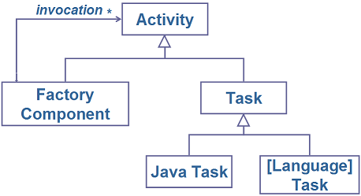
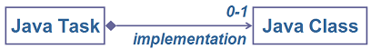
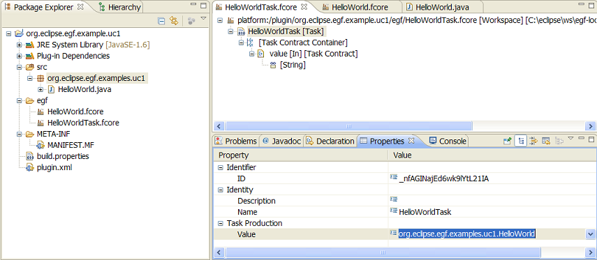
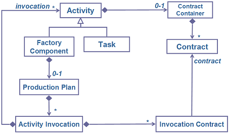

EGF Tutorial - Factory Component. First steps. |
This first tutorial explains how to create and execute simple factory components with EGF.
Generation activities. A generation can be decomposed into generation stages down to the generation leaves which realize the effective generation tasks, such as producing an API. In EGF, this corresponds to factory components that delegate their generations, by an activity invocation, to other factory components until tasks that realizes a generation task. EGF proposes a task implementation in the Java language.
Storage. Factory components and tasks are stored in fcore files.

Figure 1. EGF Activity Relationships
The sequence of actions to create a factory component:
The sequence of actions is the same for creating a task: select Task as model object instead of Factory Component.
A fcore file is a resource able to contain several activities, i.e. several factory components or tasks. In order to add a new activity in the same fcore file:
During this tutorial, a Java class will be implemented. Then, it is better to start with a Java project.
Create a Factory component named HelloWorld and a Task named HelloWorldTask.
Figure 2. New EGF Activity
Contracts. In EGF, an activity parameter is named Contract. Factory component and task contracts are contained in a Contract Container. A Contract has a Name, Mode (IN, OUT, IN_OUT), is mandatory or not, has a Type, and possibly a default value.

Figure 3. Activity Contracts
Task declaration and implementation. A task realizes an effective work. It is necessary to differentiate the task declaration, defined in a fcore model, from the task implementation, defined in a Java class. After its declaration, a task can be invoked by different factory components. The task implementation is the means to execute any tool, or any code in Java. The Java class implements an ITaskProduction interface. It can implement three methods: preExecute, doExecute, postExecute. The task methods have a context parameter to get, set and work with the task contracts. The link between the Task and the task Java class is realized at the task level.

Figure 4. Java Task and Java Task implementation
Task modeling - The sequence of actions to create task contracts:
Create a Task contract 'value' of String contract type with the (default) value 'World', as shown in the following figure.

Figure 5. Java Task Example
Task implementation - The sequence of actions to create and associate a task Java Class:

Figure 6. Java Task / Java class association
Create a Java class HelloWorld that displays an parameterized Hello message. Example of code:
import org.eclipse.core.runtime.IProgressMonitor;
import org.eclipse.egf.core.EGFCorePlugin;
import org.eclipse.egf.core.producer.InvocationException;
import org.eclipse.egf.ftask.producer.context.ITaskProductionContext;
import org.eclipse.egf.ftask.producer.invocation.ITaskProduction;
public class HelloWorld implements ITaskProduction {
@Override
public void doExecute(ITaskProductionContext productionContext,
IProgressMonitor monitor) throws InvocationException {
String value = productionContext.getInputValue("value", String.class);
String outputMessage = new String ("Hello " + value + "!");
// Message on the default console
System.out.println(outputMessage);
// Message on the EGF console
EGFCorePlugin.getDefault().logInfo(outputMessage);
}
@Override
public void preExecute(final ITaskProductionContext context, final IProgressMonitor monitor_p) throws InvocationException {
// TODO Auto-generated method stub
}
@Override
public void postExecute(final ITaskProductionContext context, final IProgressMonitor monitor_p) throws InvocationException {
// TODO Auto-generated method stub
}
}
Associate the HelloWorld class to the HelloWorldTask Java task.
Orchestration. The same task / factory component can be invoked by different factory components; the same factory component can invoke several factory component and/or tasks. Invocations to factory components and tasks are defined in an orchestration. EGF proposes a simple orchestration type named production plan. A production plan is a sorted list of activity invocations. A task invocation calls a task with the values required by the task contracts. The following figure details the first figure.

Figure 7. Factory Component Orchestration
The sequence of actions to create a production plan:
The sequence of actions to create an invocation in a production plan:
The sequence of actions to set values for the invocation:
The two last steps are necessary when the default value of the task contract must be redefined or is undefined and madatory.
In the HelloWorld factory component, create a task invocation without invocation contract (the default value of the task contract is used) and another one with an invocation contract and the associated value.
Execution during the development phase. During the development phase, there exist two modes to execute a task or factory component. 1) Dynamically, directly on a factory component or on a task, when the model is open. This mode is useful to simultaneously develop and test tasks and factory components. Before execution, it is controled that the model is valid. 2) On the fcore resource. This avoids to open the fcore resource.
Execution on the target platform. After deployment in the target platform, the factory components, tasks, and fcore resources can be normally executed.
Preferences. The EGF production settings are accessible via the EGF preferences.
The sequence of actions to execute a task or factory component dynamically:
The sequence of actions to execute a fcore resource: